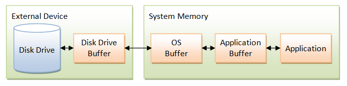

New I/O (java.nio) (JDK 1.4)
JDK 1.4 introduced the so-called New I/O (or NIO), in java.nio package and its auxiliary packages, to support high performance and intensive I/O operations. NIO is meant to complement the existing Standard I/O (in java.io package), not as a replacement.
NIO Buffers - Class java.nio.Buffer
Physical I/O operation is thousands times slower than memory access. Hence, a chunk of data is often cache or buffer to improve the throughput. As illustrated from the above diagram, many layers of cache exist between your Java application and physical disk.
- Disk Buffer is RAM that is built into the disk drive to store a block of data from the disk. The cost of transferring data from the disk surface to the disk buffer is by far the slowest and the most expensive operation, because it involves physical movement of the disk.
- OS Buffer: OS does its own buffering as it can cache more data and manage it more elegantly. This buffer can also be shared among the applications.
- Application Buffer: Application may optionally buffer its own data.
NIO data transfer is through the so-called buffers implemented in java.nio.Buffer class. A Buffer is similar to an array, except that it is implemented much more efficiently by closely coupled with the underlying operating system. A Buffer is a contiguous, linear storage. Similar to an array, a Buffer has a fixed capacity.
The is a buffer class for each of the primitive types (except boolean), as shown in the above diagram. The abstract superclass java.nio.Buffer provides the common properties of all buffers, and define a small set of common operations.
A Buffer has a capacity, position, limit, and an optional mark:
- The capacity must be specified when the
Bufferis constructed and cannot be changed (similar to an array). You can retrieve it via methodcapacity(). - The limit specifies the current occupancy. In other word, the buffer contains valid data in the range 0 to limit-1. You can retrieve the current limit via method
limit()or set thelimitvia methodlimit(int newLimit). Limit shall not be greater than capacity. - Unlike array, there is a so-called position (or cursor) in a
Bufferthat indicates where the next piece of data is to be read or written. You can retrieve the current position via methodposition()or change the current position via methodposition(int newPosition). Position shall not be greater than the limit. - A mark provide a positional marker. You can mark the current position via the method
mark().
Data Transfer (Get/Put): Each of the primitive buffers provides a set of get() and put() methods to read/write an element or a array of elements from/to the buffer. The position increases by the number of elements transferred. For example, the IntBuffer provides:
// IntBuffer - Similar operations available for ByteBuffer, CharBuffer, // ShortBuffer, LongBuffer, FloatBuffer and DoubleBuffer public int get() // Reads an element from the current position (relative get) public int get(int position) // Reads an element from the given position (absolute get) public IntBuffer get(int[] dest) // Relative bulk get into the destination array public IntBuffer get(int[] dest, int offset, int length) public IntBuffer put(int element) // relative put (at current position) public IntBuffer put(int position, int element) // absolute put public IntBuffer put(int[] source) // relative bulk put public IntBuffer put(int[] source, int offset, int length)
ByteBuffer is special. It provides additional getXxx()/putXxx() methods to parse raw bytes into other primitive types. It also can be used as the sources and targets of I/O operations, which will be explained later in channel I/O.
// ByteBuffer additional getXxx()/putXxx() public char getChar() // relative public char getChar(int position) // absolute public int getInt() public int getInt(int position) public long getLong() public long getInt(long position) public short getShort() public short getShort(int position) public float getFloat() public float getFloat(int position) public double getDouble() public double getDouble(int position)
Mark and Reset: You can use mark() method to mark the current position. Invoking reset() sets the position to the previously-marked position. The mark may or may not be set. If the mark is not set, invoking reset() triggers an InvalidMarkException. If the mark is set, it should never be greater than the position (because the mark() marks the current position and position advances). The mark will be discarded when the position or the limit is adjusted to a value smaller than the mark. Hence, 0 ≤ mark ≤ position ≤ limit ≤ capacity.
Clear, Flip and Rewind:
clear(): sets thepositionto 0,limitto thecapacity, and discardsmark. It prepares the buffer for input.flip(): sets thelimitto the currentposition,positionto 0, and discardmark. Buffer populated and ready for output.rewind(): set the position to 0, and discard mark. It prepares the buffer for re-read.
Creating a Buffer: There are 3 ways to create a buffer:
- via method
allocate(int capacity), which allocates a new buffer, sets position to 0 and limit to capacity, and clear the mark. - wrap an existing array into buffer via
wrap(type[] array, int offset, int length)orwrap(type[] array)method. - by creating a view of an existing
ByteBuffer(to be discussed later).
Direct vs Indirect Buffers: A buffer can be direct or indirect. For a direct buffer, "the JVM will make a best effort to perform native I/O operations directly upon it. That is, it will attempt to avoid copying the buffer's content to (or from) an intermediate buffer before (or after) each invocation of one of the underlying operating system's native I/O operations." In other words, direct buffer is more efficient.
For byte buffer, you can allocate a direct ByteBuffer via the allocateDirect(int capacity) method. For other buffers (char, short, int, long, float, double), you need to first allocate a ByteBuffer, and then create a view via methods such as asFloatBuffer(). As these primitive types have unit of multiple bytes (e.g., an int is 4 bytes), you need to specify the byte order of either big-endian (big byte first) or little-endian (little byte first) via order(ByteOrder order) method. The order could be ByteOrder.BIG_ENDIAN, ByteOrder.LITTLE_ENDIAN, or ByteOrder.nativeOrder() which returns the native byte order of the underlying platform for you to write portable program.
ByteBuffer: ByteBuffer is special. To summarize:
- It is used in channel I/O (see channel I/O below).
- You can allocate
ByteBufferas direct. In this case, the JVM will make a best effort to perform native I/O directly for better performance. - You can create a view as other buffer, such as FloatBuffer via
asFloatBuffer(). - You can get/put as other primitive types via
getXxx()andputXxx(). MapByteBufferfor mapped I/O.
Example: The following example allocates a direct FloatBuffer by creating a view of a direct ByteBuffer. It then populates the FloatBuffer. [This segment of codes is used in OpenGL ES rendering.]
import java.nio.*;
public class TestDirectBuffer {
public static void main(String[] args) {
// 3 vertices (x, y, z) of the triangle
float[] vertices = {
0.0f, 1.0f, 0.0f, // top (x, y, z)
-1.0f, -1.0f, 0.0f, // left-bottom (x, y, z)
1.0f, -1.0f, 0.0f // right-bottom (x, y, z)
};
FloatBuffer vertexBuffer;
// Setup vertex-array buffer. Vertices in float.
// Allocate a direct ByteBuffer for the vertices. A float has 4 bytes.
ByteBuffer vbb = ByteBuffer.allocateDirect(vertices.length * 4);
// Set the byte order (big-endian or little-endian) to the native
// byte order of the underlying platform for portable program.
vbb.order(ByteOrder.nativeOrder());
// Create a direct FloatBuffer as a view of this ByteBuffer.
// Position is 0.
vertexBuffer = vbb.asFloatBuffer();
// Copy the data from float[] to the buffer from the current position.
vertexBuffer.put(vertices);
// Rewind by setting position to 0.
vertexBuffer.position(0);
// OpenGL can use the FloatBuffer directly
// gl.glVertexPointer(3, GL10.GL_FLOAT, 0, vertexBuffer);
}
}
More Examples [TODO]
java.nio.MappedByteBuffer
MappedByteBuffer is a so-called direct buffer that is managed by the OS, instead of the Java application. In other words, MappedByteBuffer can be used to wrap a region of OS buffer. Application can allocate different direct buffer to view the different portion of the OS buffer. [TODO more]
Channels (java.nio.channels.Channel)
A channel represents a connection to a physical I/O device (such as file, network socket, or even another program). It is similar to Standard I/O's stream, but a more platform-dependent version of stream. Because channels have a closer ties to the underlying platform, they can achieve better I/O throughput. The types of channel include:
FileChannelSocketChannel: support non-blocking connection for TCP socket.DatagramChannel: UDP Datagram-oriented socket.
A Channel object can be obtained by calling the getChannel() methods of classes such as java.io.FileInputStream, java.io.FileOutputStream, java.io.RandomAccessFile, java.net.Socket, java.net.ServerSocket, java.net.DatagramSocket, and java.net.MulticastSocket.
For example, you can obtained a FileChannel as follows:
FileInputStream fis = new FileInputStream("in.dat");
FileChannel fc = fis.getChannel();
// or
FileChannel fc = new FileInputStream("in.dat").getChannel();
A FileChannel obtained from a FileInputStream is read-only; while a FileChannel obtained from a FileOutputStream is write-only. While Stream I/O processes one byte at at time; channel I/O reads/write a buffer at a time. In standard I/O's stream, data is read/write into/from a byte or a byte-array. For FileChannel, data is transferred via a ByteBuffer object in read()/write() methods.
public abstract int read(ByteBuffer dest) public abstract int write(ByteBuffer source)
You can transfer data between an input channel and an output channel directly via:
public abstract long transferFrom(ReadableByteChannel source, long position, long count) public abstract long transferTo(long position, long count, WritableByteChannel target)
Example: Copying a file using FileChannel
import java.io.*;
import java.nio.ByteBuffer;
import java.nio.channels.FileChannel;
public class FileChannelCopyJDK7 {
public static void main(String[] args) {
String inFileStr = "test-in.jpg";
String outFileStr = "test-out.jpg";
long startTime, elapsedTime; // for speed benchmarking
int bufferSizeKB = 4;
int bufferSize = bufferSizeKB*1024;
// Check file length
File fileIn = new File(inFileStr);
System.out.println("File size is " + fileIn.length() + " bytes");
System.out.println("Buffer size is " + bufferSizeKB + " KB");
// Using FileChannel with indirect ByteBuffer
System.out.println("Using FileChannel with an indirect ByteBuffer of " + bufferSizeKB + " KB");
try (FileChannel in = new FileInputStream(inFileStr).getChannel();
FileChannel out = new FileOutputStream(outFileStr).getChannel()) {
// Allocate an indirect ByteBuffer
ByteBuffer bytebuf = ByteBuffer.allocate(bufferSize);
startTime = System.nanoTime();
int bytesCount;
while ((bytesCount = in.read(bytebuf)) > 0) { // Read data from file into ByteBuffer
// flip the buffer which set the limit to current position, and position to 0.
bytebuf.flip();
out.write(bytebuf); // Write data from ByteBuffer to file
bytebuf.clear(); // For the next read
}
elapsedTime = System.nanoTime() - startTime;
System.out.println("Elapsed Time is "
+ (elapsedTime / 1000000.0) + " msec");
} catch (IOException ex) {
ex.printStackTrace();
}
// Using FileChannel with direct ByteBuffer
System.out.println("Using FileChannel with a direct ByteBuffer of " + bufferSizeKB + " KB");
try (FileChannel in = new FileInputStream(inFileStr).getChannel();
FileChannel out = new FileOutputStream(outFileStr).getChannel()) {
// Allocate a "direct" ByteBuffer
ByteBuffer bytebuf = ByteBuffer.allocateDirect(bufferSize);
startTime = System.nanoTime();
int bytesCount;
while ((bytesCount = in.read(bytebuf)) > 0) { // Read data from file into ByteBuffer
// flip the buffer which set the limit to current position, and position to 0.
bytebuf.flip();
out.write(bytebuf); // Write data from ByteBuffer to file
bytebuf.clear(); // For the next read
}
elapsedTime = System.nanoTime() - startTime;
System.out.println("Elapsed Time is "
+ (elapsedTime / 1000000.0) + " msec");
} catch (IOException ex) {
ex.printStackTrace();
}
// Using FileChannel with transferTo()
System.out.println("Using FileChannel with transferTo()");
try (FileChannel in = new FileInputStream(inFileStr).getChannel();
FileChannel out = new FileOutputStream(outFileStr).getChannel()) {
startTime = System.nanoTime();
in.transferTo (0, in.size(), out);
elapsedTime = System.nanoTime() - startTime;
System.out.println("Elapsed Time is "
+ (elapsedTime / 1000000.0) + " msec");
} catch (IOException ex) {
ex.printStackTrace();
}
// Using Buffered Stream I/O
System.out.println("Using Buffered Stream");
try (BufferedInputStream in = new BufferedInputStream(new FileInputStream(inFileStr));
BufferedOutputStream out = new BufferedOutputStream(new FileOutputStream(outFileStr))) {
startTime = System.nanoTime();
int bytesCount;
while ((bytesCount = in.read()) != -1) {
out.write(bytesCount);
}
elapsedTime = System.nanoTime() - startTime;
System.out.println("Elapsed Time is " + (elapsedTime / 1000000.0) + " msec");
} catch (IOException ex) {
ex.printStackTrace();
}
// Using a programmer-managed 4K byte-array for Disk I/O
System.out.println("Using a programmer-managed byte-array of " + bufferSizeKB + " KB");
try (FileInputStream in = new FileInputStream(inFileStr);
FileOutputStream out = new FileOutputStream(outFileStr)) {
startTime = System.nanoTime();
byte[] byteArray = new byte[bufferSize]; // byte-array
int bytesCount;
while ((bytesCount = in.read(byteArray)) != -1) {
out.write(byteArray, 0, bytesCount);
}
elapsedTime = System.nanoTime() - startTime;
System.out.println("Elapsed Time is " + (elapsedTime / 1000000.0) + " msec");
} catch (IOException ex) {
ex.printStackTrace();
}
}
}
File size is 1378093 bytebuffer Buffer size is 4 KB Using FileChannel with an indirect ByteBuffer of 4 KB Elapsed Time is 14.649701 msec Using FileChannel with a direct ByteBuffer of 4 KB Elapsed Time is 8.032151 msec Using FileChannel with transferTo() Elapsed Time is 3.573988 msec Using Buffered Stream Elapsed Time is 125.604174 msec Using a programmer-managed byte-array of 4 KB Elapsed Time is 5.642199 msec
FileChannel with a 4K direct ByteBuffer is faster than indirect ByteBuffer. Buffered Stream I/O is many times slower than FileChannel. However, it is interesting to note that the programmer-managed byte-array is faster than some channels?!
The following table compare the run-time for various buffer size with (a) Using FileChannel with an indirect ByteBuffer, (b) Using FileChannel with a direct ByteBuffer, (c) Using FileChannel with transferTo(), (d) Using Buffered Stream, (e) Using a programmer-managed byte-array.
BufSize (a) (b) (c) (d) (e) 4KB 16.67 9.73 3.33 124.21 7.72 16KB 6.92 3.39 1.86 110.85 4.06 32KB 3.95 2.75 1.76 109.60 2.90 64KB 3.26 2.15 1.88 109.77 2.96 128KB 2.77 2.11 2.02 109.64 2.59 256KB 2.49 1.66 1.80 109.10 2.55 1024KB 3.57 1.86 1.97 109.08 5.88
[PENDING] Network I/O with NIO. SocketChannel and DatagramChannel.
Selectors
A number of channels can be registered with a selector (java.nio.channels.Selector). A selector provides a mechanism for waiting on channels until one ore more become available for data transfer. It can be used to block the program until at least one channel is available for use. Examples are server applications that involves simultaneously waiting for responses on a number of session. [TODO]
Character Set (Charset) - java.nio.charset package
[Covered in Basic I/O]
Regular Expression - java.util.regex package
[TODO in regexe chapter]Advanced I/O in JDK 7
[TODO]
LINK TO JAVA REFERENCES & RESOURCESMORE REFERENCES & RESOURCES
- Java Online Tutorial on "Basic I/O" @ http://download.oracle.com/javase/tutorial/essential/io/index.html, in particular "File I/O (Featuring NIO.2)".